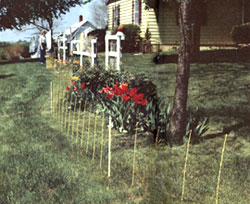
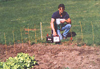
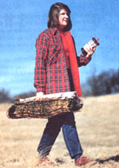
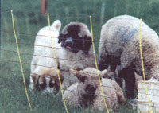
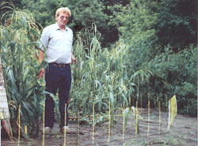
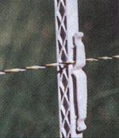
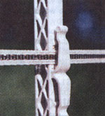

Summer Projects
From polywire to radio fences, a complete guide to buying and maintaining a little harvest protection
E lectric fences for most pastures are an expensive but mandatory piece of overhead, and no rancher or farmer with cattle can do without them. Their styles and methods of operation are many (see "A Fence That Lasts a Lifetime;" issue #131), but they are designed to enclose are as on a grand scale. For those of us with smaller but equally precious garden plots to protect, modified electric fences can assure that your hard-won autumn harvest goes unmolested by other hungry creatures and that your wallet will survive the effort.
With lightweight electric fences, you don't need heavy posts or specialized tools. All you do is push the self-insulating plastic or fiberglass posts into the ground by hand or tap them in with a mallet. And you won't need posts at all if you put up an "invisible" radio fence to keep your doggy out of the veggie patch. But more on that in a moment.
Visible electrified garden fencing comes in three options: twine, tape, and net. A ll three are made from strands of polyethylene combined with metal filaments, the polyethylene for strength, the metal filaments to conduct electric current. Would-be marauders coming into contact with the fence get a jolt that's not unlike a sharp static spark.
The beauty of electroplastic fencing is that it goes up fast. You can fence the average family-sized garden in an hour or less. After the autumn harvest, you can take the fence down, roll it up, and put it away for the winter, giving you an unobstructed view of the backyard while your garden is fallow.
Convenience You can finish the average-sized garden with electroplastic fence in an hour or less.
The basic stuff electroplastic fencing is made of is electroplastic twine, also known as "polywire." Lightweight and easy to cut with scissors, polywire is used much the same way you would use any fence wire.
It looks a bit different, however, mainly because it comes in colors-yellow, white, orange, and black. Color affects both the fence's visibility and its resistance to ultraviolet sunlight. Black has the greatest resistance to sunlight but is hardest to see. Color visibility is strictly for the benefit and safety of humans, since most animals are color blind.
Besides enhancing visibility, the different colors are handy if you put up a wire-return fence, in which some of the wires are hot while others are grounded. In a standard electric fence, all the wires are hot. When a would-be veggie muncher touches the fence, a jolt passes through its body, into the ground, through the soil to the fence's source of energy, and back through the hot wire to complete the circuit. Dry soil is not very conductive, so an all-hot system doesn't work particularly well in dry climates.
With a wire-return system, a marauder touching two lines in the fence-one hot and one grounded-gets the message no matter how dry the soil might be. Making hot wires one color and grounded wires another lets you easily spot the occasional short-circuit caused when a sagging or broken hot wire comes into contact with the soil or a grounded wire.
For a polywire fence, you'll need lightweight posts every 25 feet along the fence line. Fiberglass or plastic posts are self-insulating. To hold the wire in place, some require additional spring clips (looking like convoluted paper clips; other posts have wire spacers molded right on them. If you use rebar posts (concrete reinforcement bars, cut to length), you'll need to use the more expensive screw-on plastic insulators.
A reel will keep the polywire from getting tangled or knotted when you set up your fence and take it down. Reels come in varying sizes (to accommodate different wire lengths) and in various styles. Some reels have a ratchet brake so the spool will stop turning when you stop pulling the wire. Some have a lock so the wire can't unwind on its own. A good reel has a carrying handle, adjustable drag so the wire won't run away from you, and a crank for rewinding. If you like expensive gadgets, you might get a reel with a battery-powered energizer hidden in the hub. If you're on a tight budget, a simple reel designed for storing extension cords works just fine.
You won't need a gate if your fence is designed to keep out small critters-simply step over. For a taller fence that bars deer or elk, tie each line wire to an insulated gate handle and hook the handle into a loop in the corresponding wire at the other side of the gateway. To get through the gate, unhook the top few wires and step over the bottom ones. To push a wheelbarrow or cart through, unhook all the wires. If you use a wire-return system, take care when you close the gate not to hook a grounded handle to a hot loop or you'll short out your fence.
A single strand of polywire is often enough to keep out small varmints. For rabbits and groundhogs, run it 3 to 4 inches off the ground. For small dogs, try 10 or 12 inches high. If raccoons are getting into your corn, string two strands, the first 5 inches up, the second 11 inches from the first (5-11). An all-purpose three wire fence, spaced 4-5-6, should keep out most small dogs, rabbits, raccoons, groundhogs, and cats. If salad seekers still slip through, try a 3 4-6-8 configuration.
Polywire fencing is so easy to adjust, you shouldn't have any trouble finding just the right spacing for your terrain and combination of critters. As a general guideline, for each species you wish to exclude, string one hot line at the height of the animal's nose when it's ambling along.
Storing away an unused electroplastic fence has a practical as well as an aesthetic side-a stored fence is protected from the ravages of sun, wind, and icy weather and your fence will enjoy a longer useful life if you take it down seasonally. In doing so taking care not to drag it along the ground or snag it on rocks. Wrap the fence in plastic, tape the bundle tight, and hang it where gnawing rodents can't get at it. A well-treated elecfroplastic fence can last as long as 10 years.
Electroplastic tape or hot tape was invented to overcome the visibility problems of electroplastic twine. Because of its width, hot tape is more easily seen by fast moving animals like deer and by klutzy gardeners who tend to bump into a fence while planting or hoeing.
Hot tape is made of the same polyethylene strands and metal filaments as electroplastic twine, only woven into a flat strip that looks like ribbon. Tape comes in a variety of colors and in two widths: 1/2 inch and 1 1/2 inch. The wider version is easier to see, can be stretched tighter, lasts longer, has better conductivity and comes in a dual-track version with a built-in wirereturn system.
The visibility of hot tape is enhanced not only by its width but by its ability to flutter in the slightest breeze. Fluttering both makes the tape appear wider than it is and interferes with depth perception, causing marauders to steer clear. Flutter has its downside, though: wind abrasion causes tape to wear out more quickly than twine.
Polytape is also not quite as easy to splice as polywire. Two lengths of twine can be joined with tight knots, but knots in tape have air gaps that cause the fence to lose conductivity. Steel buckles are available to improve the conductivity of splices, but you can accomplish the same thing for less money with strips of aluminum foil. Start a square knot, lay a strip of foil against it, wrap the foil around the tape three or four times, finish tying the knot and squeeze the splice tight.
You can add a single strand of hot tape to a twine fence to make it easier to see, or use hot tape alone. For some critters, you can get by stringing a single tape at nose height. For most deer that's 3 feet or a little less, for elk it's about 4 feet. To discourage honey-loving bears from raiding beehives kept for garden pollination, try two strands of tape spaced 8-12. If that doesn't do it, go to three, spaced 10-10-10.
Marauders getting a jolt while investigating a fence out of curiosity are less likely to come back than animals that accidentally get zapped. To attract curious deer, smear heavy foil strips with peanut butter and drape them along the fence. To attract inquisitive ursines, tie strips of fresh bacon at intervals along the fence. These treats entice curious creatures to touch the fence with a moist nose or tongue, with memorable consequences. A cleared buffer strip around your garden makes hot tape easier to see from a distance, giving deer and bear plenty of time to develop cautious curiosity.
An electroplastic net fence is easier to see and therefore more reliable than a twine or tape fence. The net is woven from polywire and comes completely preassembled with posts and connector clips. One length covers 150 feet and comes in a neat bundle weighing about 10 pounds.
To support the corners, guy lines with tent pegs are included. But since guys are easy to trip over and hard to mow around, you'll be better off reinforcing each corner with an extra post driven 18 inches deep. If your soil is loose or sandy, add a few extra posts along the sides, as well, so your fence won't topple when a breeze blows branches or tumble weeds against it.
You won't need a gate here, either. You can step over a short net fence. If you opt for a taller version, just switch off the juice and roll back the last panel when you want to go through.
Electroplastic netting comes in a variety of brands and heights. The shorter the fence, the smaller the mesh and the more readily it controls small animals. The shortest net, 20 plus inches, is the standard garden version for keeping out rabbits, raccoons, groundhogs, and small dogs. To control deer as well as little critters, run a strand or two of hot tape above the net.
A standard net fence has all hot horizontal except the bottom one, which lies along the ground and is therefore grounded. For use in dry climates, a wire return version has alternating hot and grounded horizontals. A system with hot wires of one color and grounded wires of another color is more sensible than a single color system, because you're less likely to inadvertently join a hot line with a grounded line and short out your fence.
Even though it looks much like a lightweight woven wire fence, electroplastic netting works only when it's energized. Otherwise, rabbits may chew through it and pets or wildlife will get tangled in it, tearing the net and possibly getting strangled in the process.
To energize your fence you'll need an electric-fence controller, which converts electricity into a series of high-voltage pulses that course through the fence in short bursts. This is no place to cut corners by trying to make your own energizer-homemade fence controllers are, more often than not, lethal. Besides converting electricity to a less devastating form, manufactured energizers output a pulse that gives man or beast an opportunity to pull away during the off time. To keep electroplastic-fence material from melting, look for a low impedance unit with an on time of no more than .003 seconds.
Energizers come in various sizes as determined by the amount of energy they put out. The amount of energy you need depends on the length of your fence and the number of line wires it contains. A small unit, putting out around 7,000 volts or up to 0.5 joules, is sufficient for the average family-sized garden. Each of the suppliers listed at the end of the article will help you select the best energizer for your particular situation.
Energizers are classified according to their source of power. The two basic options are plug-in and battery operated. A plug-in unit makes sense only if your garden is close to an electrical outlet, say in a potting shed or at the corner of your house. It is not suitable for a location where you must run an extension cord from the energizer to the source of power. The big advantage to a plug-in is that it more easily overcomes encroaching grass and weeds than a battery-powered unit. Its chief disadvantage is that it doesn't work during power outages-a serious consideration in most rural areas.
If your garden doesn't conveniently let you use a plug-in, a battery-powered controller is your best bet. To keep the battery from draining quickly, battery-powered units don't pack the same wallop as plugins and they can't handle much of a weed load. You therefore have to be more diligent about keeping down grass and weeds along the fence line.
The average garden requires nothing more than a 6-volt battery controller. When the battery runs down, replace it with another from any discount store. To keep your battery running longer, hook it up to a solar collector, or opt for a controller with a built-in solar panel.
Solar energizers in general tend to be at the weaker end of the battery-power scale. Some solar energizers are much better than others, primarily because they have larger panels. The amount of power collected by the panel must balance the power used by the energizer, which in turn is determined by the style of fence you choose. No solar energizer works well in a shady or perpetually cloudy area.
No matter what kind of energizer you get, it will need some degree of protection from weather. Some battery-powered controllers and all solar charged units have built-in weather protection, but still must be inspected after hail or moderate winds.
All energizers also need a grounding system. Here again, some battery-powered units have built-in ground rods; for others you must purchase a grounding rod and clamp from an electrical-supply outlet. Do not ground your fence to the ground wire of a utility pole or to your home's plumbing system-it's a violation of code. Proper grounding will not only improve the performance of your fence, but it will minimize the chance you'll pick up the fence's "tick-tick-tick" over your phone or radio. During dry weather, you can improve the ground by watering your ground rod when you water your garden.
An invisible fence shocks a would-be garden intruder with a sharp snap that's similar to that from an electric fence, but in this case the intruder must be wearing a shock collar. Known also as "hidden" or "radio" fence, the system consists of three basic parts: boundary wire that defines the area to be fenced, a radio transmitter that sends a pulsed signal through the wire (generated by either a 12-volt battery or a standard 110-volt wall outlet, depending on the brand), and a battery-powered shock collar that picks up the signal.
The boundary wire is laid along the ground or buried just beneath it, leaving your yard unobstructed by cross fencing. Unless your yard has a sturdy perimeter fence, stray dogs and wandering wildlife can still get in. The primary use of this fence is to control your own dog within your own property.
The dog wearing the collar hears a warning signal when it enters the radio field, which in this case defines the edge of the garden area. If the dog doesn't retreat within seconds, it gets a shock. After one or two shocks, the dog learns to back off as soon as it hears the warning.
Fence prices vary considerably with the style and brand you choose. To enclose a 75 x 75 foot garden, expect to pay just under $150 for an eledroplastic-twine or tape system, complete with 12 posts and a 6-volt battery-operated self-grounding controller designated for outdoor use. A 20-inch electroplastic net fence for the same-sized garden, powered by the same energizer, runs about $275. If you want to control poochie with a radio fence, pay about $100 or keep shopping.
Fences for Pasture & Garden by Gail Damerow, Rural Heritage, 281 Dean Ridge Lane, Gainesboro, TN 38562, 615-268-0655-complete guide to fencing. Draper's, Route 1, Box 97, Millerton, PA 16936, 800 233-4273-short video on basic bear fencing, which is similar to any electric garden fence.
Electroplastic Fences
New Zealand Fence Systems, PO Box 518, Boring, OR 97009, 800-222-6849. Premier Fence Systems, Box 89, Washington, IA 52353,800282-6631. Waterford Corporation, PO Box 1513, Fort Collins, CO 80522,800-525-4952. West Virginia Fence Corp., US Route 219, Lindside, WV 24951,800-356-5458. PEL Electric Fence Systems, PO Box 51-093, Aukland, New Zealand 64 (0)9 274-5762.
Radio Fences
Dogwatch Hidden Fence Systems, 21 Cochituate Road, Wayland, MA 01778, 508-358-2200. The Invisible Fence Co., Inc., 300 Berwyn Park #010,Berwyn,PA 19312,215-640-9700. Radio Fence Corporation, 5008 National Drive, Knoxville, TN 37914, 800-858-0485.
|
 Electrified netting is powered by a portable charger and a 12-volt battery |
 Electroplastic netting, including the small fiberglass support posts, can be taken down, reeled in, and placed in winter storage in about an hour. |
 Electroplastic tape is more visible to both inquisitive animals and gardeners |
|
 Electroplastic twine or polywire and support post. |
 Hot-tape support post |
|
|
 |
 |
|